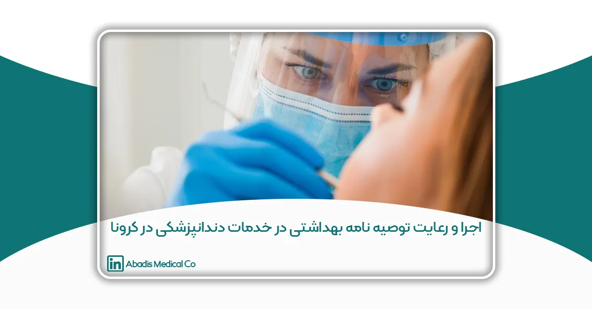

این مقاله توسط جناب آقای دکتر امیر محمد قانی، مهندس محمد بهرامی، مهندس محمد آقابابایی نوشته شده؛ و برای یازدهمین کنگره کنترل عفونت ارسال شده است.
اجرا و رعایت توصیه نامه های بهداشتی ارائه خدمات دندانپزشکی و تامین تجهیزات مورد نیاز در مراکز دندانپزشکی در زمان پاندمی کووید 19خلاصه
با آغاز شیوع ویروس کرونا در اواخر سال 1398 و باتوجه به این که مراکز دندانپزشکی از نظر خطر شیوع ویروس کرونا و عوارض و مشکلات این ویروس از اهمیت ویژهای برخوردار بودند و با انتشار و ابلاغ توصیه نامههای بهداشتی مختلف جهت ارائه خدمات دندانپزشکی در شرایط پاندمی کووید 19 از طرف وزارت بهداشت و با عنایت به اینکه اکثر مراکز دندانپزشکی استان از نظر حداقل استاندارد ها و الزامات ارائه خدمات دندانپزشکی در شرایط پاندمی کووید19 (مطابق با توصیه نامه های بهداشتی ابلاغ شده) دارای برخی کمبود ها و مشکلات بودند، در اواخر سال 1398 و با آغاز شیوع ویروس کووید 19، با همکاری مسئولین و کارشناسان معاونت های درمان، آموزشی و توسعه و همچنین ریاست دانشگاه علوم پزشکی شهرکرد تصمیم به اجرا و فراهم نمودن حداقل الزامات و استاندارد های مرتبط با توصیه نامههای بهداشتی ارائه شده از طرف وزارت بهداشت و رفع کمبودها در این زمینه در مراکز ارائه دهنده خدمات دندانپزشکی در سطح استان به ویژه کلینیک و دانشکده دندانپزشکی رسالت شهرکرد و کلینیک دندانپزشکی صدف شهرکرد (مراکز دندانپزشکی دولتی) در کمترین زمان ممکن گرفته شد و در ابتدای سال 1399 ایده و تجربه مذکور اجرایی گردید.
کلمات کلیدی: دندانپزشکی-کووید 19-الزامات-کنترل-پیشگیری
رویداد یا مسئله
در اواخر سال 1398 و با آغاز شیوع ویروس کرونا و با عنایت به اینکه مراکز دندانپزشکی از مهترین مراکز از نظر میزان خطر ابتلا به ویروس کووید 19 و عوارض و مشکلات متعدد پس از آن بودند در سطح دانشگاه علوم پزشکی شهرکرد و به طور ویژه معاونت درمان دانشگاه تصمیم به اجرا و فراهم نمودن حداقل الزامات مورد نیاز جهت کنترل و پیشگیری از شوع ویروس کووید 19 در مراکز دندانپزشکی استان به ویژه مراکز دندانپزشکی دولتی گرفته شد و با همکاری کارشناسان و مسئولین دانشگاه در حیطههای مختلف پروژه و تصمیم فوق الذکر در ابتدای سال به طور جدی در سال 1399 اجرایی گردید.
برخی از مهمترین انگیزهها و همچنین مشکلاتی که منجر به طرح و اجرای این تجربه گردید عبارتند از:
- احتمال بالای خطر شیوع ویروس کووید 19 در مراکز ارائه دهنده خدمات دندانپزشکی سطح استان به دلیل نوع خدمات ارائه شده
- کمبود برخی از تجهیزات و الزامات تاسیساتی و ساختمانی در اکثر مراکز دندانپزشکی سطح استان بر اساس الزامات و توصیه های ابلاغ شده از طرف وزارت بهداشت جهت ارائه خدمات دندانپزشکی در شرایط پاندمی کووید 19
- عدم آگاهی پرسنل ارائه دهنده خدمات دندانپزشکی از الزامات مربوط به کنترل و پیشگیری از شیوع ویروس کووید 19
- عدم اطلاع و آگاهی مراجعین و افراد نیازمند به خدمات دندانپزشکی از راه های انتقال ویروس کووید 19 و الزامات مرتبط با پیشگیری و کنترل ویروس
نحوه اجرای تجربه
پس از طرح و تصویب اجرای فرآیند مورد نظر به صورت یکپارچه در مراکز دندانپزشکی سطح استان طی جلسات متعدد برگزار شده در سطح دانشگاه هماهنگی های لازم جهت فراهم نمودن الزامات پروژه و نظارت بر حسن اجرای فرآیند در مراکز ارائه دهنده خدمات دندانپزشکی در سطح استان انجام پذیرفت. ابتدا لیست کلیه مراکز درمانی ارائه دهنده خدمات دندانپزشکی در سطح استان چه در بخش خصوصی و چه در بخش دولتی استخراج گردید و طی بازدیدهای انجام شده در بازه زمانی کوتاه مدت (به دلیل اهمیت سرعت عمل در انجام فرآیند) و سایر مکاتبات صورت پذیرفته، لیست کلیه امکانات و تجهیزات مورد نیاز و کمبود های مراکز دندانپزشکی مطابق با توصیه نامه های ابلاغی وزارت بهداشت تهیه و جمع آوری گردید و سپس مکاتبات و رایزنی های لازم با معاونت توسعه و نیروهای پشتیبانی ستاد دانشگاه و روسا و مسئولین مراکز دندانپزشکی خصوصی جهت تامین منابع مالی جهت تهیه و برطرف نمودن کمبود های موجود و فرآهم نمودن حداقل الزامات مراکز دندانپزشکی دولتی و خصوصی در حداقل زمان ممکن صورت پذیرفت و سپس طی جلسات برگزار شده چکیده و نکات مهم شیوه نامه ها و توصیه نامههای ابلاغی از طرف وزارت بهداشت تهیه و جهت اجرا به و آموزش به صورت یکپارچه به کلیه مراکز دندانپزشکی سطح استان ارسال گردید. پس از تامین امکانات و تجهیزات مورد نیاز و ارسال شیوه نامه های آموزشی، جلسات و کارگاه های آموزشی به صورت عملی و نظری برای پرسنل و کادر درمان مرتبط برگزار گردید.
پس از تامین امکانات و آموزش پرسنل، طی بازدید های متعدد انجام شده صحت اجرای کلیه فرآیند های مربوطه در مراکز دندانپزشکی سطح استان مورد ارزیابی قرار گرفت و با تخلفات و موارد مغایر مشاهده شده برخورد های لازم صورت پذیرفت.
به طور خلاصه مراحل اجرای فرآیند به شرح ذیل توضیح داده خواهد شد:
۱- فراهم نمودن حداقل های مورد نیاز ارائه خدمات دندانپزشکی در شرایط اپیدمی کووید19
۱-۱ تامین تجهیزات جهت استریل ابزار و ضدعفونی سطوح
شامل: اتوکلاو نوع بی،انواع محلول های ضدعفونی سطوح، محلول یا ژل بر پایه الکل ضدعفونی کننده دست و سایر تجهیزات جهت تکمیل لاین سی اس ار مرکز جهت استریل بودن وسایل مصرفی دندانپزشکی
۱-۲ تامین تجهیزات مورد نیاز ارائه خدمات دندانپزشکی
شامل پکیج های یک بار مصرف (یا استریل شده) جهت کلیه امور درمانی به صورت جداگانه برای هر بیمار،
فشار منفی (تهویه قوی و مناسب) درکل فضای مرکز درمانی، به ویژه در پذیرش، انتظار و بخش درمان
دستگاه تب سنج دیجیتال ،دستگاه پالس اکسی متر، تجهیزات حفاظت شخصی پرسنل
دستگاه ساکشن مرکزی
اینسترومنتهای دندانپزشکی (توربین و آنگل و ایر موتور) به تعداد استاندارد
۲- رعایت و چاپ دستور العمل های ابلاغ شده وزارت بهداشت در قالب پوستر در معرض دید عموم
۲-۱ فرم تریاژ و غربالگری توسط کادر بهداشتی- درمانی مراکز دندانپزشکی
۲-۲ فرم خود غربالگری توسط مراجعه کنندگان
۲-۳ پمفلت اموزشی محافظت شخصی در برابر ویروس کرونا توسط مراجعه کنندگان
۲-۴ پمفلت اموزشی محافظت شخصی در برابر ویروس کرونا توسط پرسنل بهداشتی- درمانی
۲-۵ علائم بیماری کووید-19 و علائم بیماریهای مشابه (آنفولانزا و سرماخوردگی)
۳- تهیه و تنظیم انواع چک لیست ها و الزامات و امکانات مربوطه مطابق با توصیه نامه ها و دستورالعمل های ابلاغی
۳-۱ چک لیست تجهیزات حفاظت شخصی مورد نیاز دندانپزشک و پرسنل بهداشتی-درمانی
۳-۲ چک لیست الزامات اموزشی مراجعین
۳-۳ چک لیست الزامات حفاظت شخصی مراجعه کنندگان
۳-۴ چک لیست الزامات سیستم ارجاع پزشکی بیماران توسط پرسنل پذیرش
۳-۵ چک لیست الزامات فضای سالن پذیرش و انتظار
۳-۶ چک لیست الزامات اموزشی پرسنل بهداشتی-درمانی
۴- تعیین تعداد تجهیزات حفاظت شخصی مورد نیاز به ازای هر شیفت کاری برای کلیه پرسنل درمانی و اداری بر اساس استاندارد ها و الزامات ابلاغی
۵- آموزش نحوه غربالگری مراجعه کنندگان به مراکز دندانپزشکی در شرایط اپیدمی کووید 19 و تهیه نسخه متنی مربوطه جهت اطلاع پرسنل
۵-۱ غربارگری غیر حضوری طی تماس صوتی یا تصویری توسط پرسنل پذیرش
۵-۲ خود غربارگری مراجعهکنندگان
۵-۳ غربارگری حضوری مراجعه کنندگان توسط پرسنل درمانی
۵-۴ غربارگری مراجعه کنندگان توسط دندانپزشک
۶- آموزش نحوه غربارگری کادر درمان دندانپزشکی و سایر پرسنل مرکز در شرایط اپیدمی کووید 19 و تهیه نسخه متنی مربوطه جهت آگاهی پرسنل
۷- فراهم نمودن تهویه مناسب جهت اتاق های دندانپزشکی و همچنین ضدعفونی مداوم هوای اتاق با تجهیزات مختلف به ترتیب اولویت های زیر:
اولویت اول: ضدعفونی با دستگاه UV، اولویت دوم: ضد عفونی با دستگاه یون ساز، ضد عفونی با دستگاه بر پایه ازن
نکته: ضدعفونی با دستگاه UV بهترین و موثر ترین روش می باشد.
۸- آموزش و تهیه و تنظیم نسخه متنی دستورالعمل تصمیم گیری در ارائه خدمات دندانپزشکی برای مراجعه کنندگان مشکوک به کووید19 بر اساس استاندارد های و توصیه نامه های ابلاغی
۹- آموزش و تهیه و تنظیم نسخه متنی دستورالعمل تصمیم گیری در ارائه خدمات دندانپزشکی برای مراجعه کنندگان بهبود یافته از کووید19 بر اساس استاندارد های و توصیه نامه های ابلاغی
۱۰- آموزش سایر دستورالعمل ها و الزامات مرتبط با ارائه خدمات دندانپزشکی در شرایط پاندمی کووید 19
نتایج و دستاورد های اجرا تجربه
ازمهمترین نتایج و دستاورد های ناشی از اجرای پروژه میتوان به موارد ذیل اشاره کرد:
- کنترل و کاهش احتمال شیوع ویروس کوید 19 در مراکز ارائه دهنده خدمات دندانپزشکی
- آگاهی کلیه پرسنل مراکز ارائه دهنده خدمات دندانپزشکی و همچنین کلیه مراجعین این مراکز از الزامات و استاندارد های مربوطه در زمان پاندمی کوید 19
- به طور کلی کاهش احتمال شیوع انواع بیماری های واگیر دار به ویژه بیماری های تنفسی که احتمال شیوع آنها از طریق ارائه خدمات دندانپزشکی وجود دارد.
- افزایش بهره وری ناشی از ارائه خدمات دندانپزشکی در سطح استان چهارمحال و بختیاری به دلیل کاهش احتمال ابتلای پرسنل و مراجعین مراکز دندانپزشکی و به طور کلی افزایش رضایت عمومی
منبع
کلیه دستورالعمل ها و توصیه نامه های ابلاغی از طرف وزارت بهداشت در سال 1399